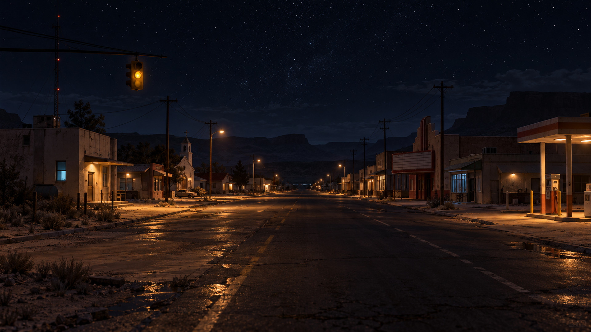
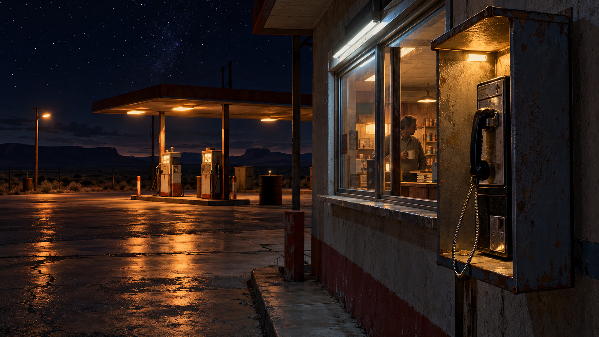
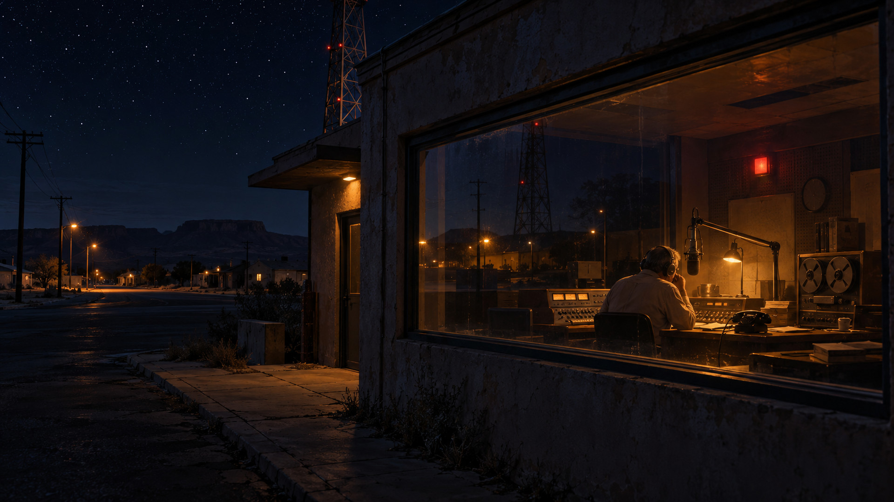
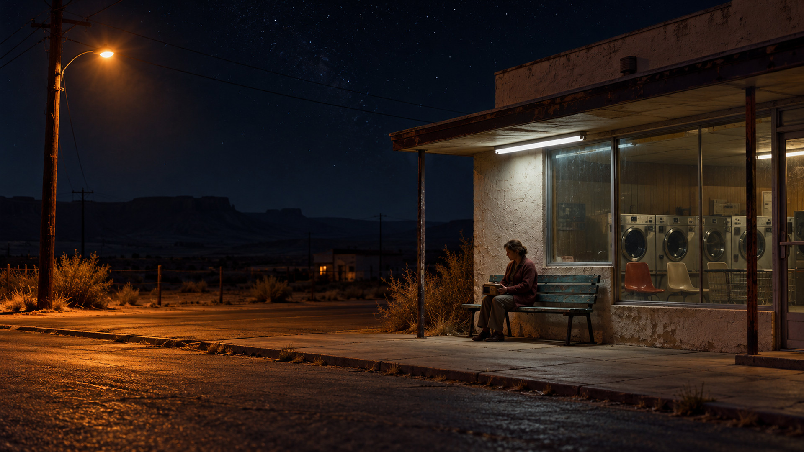
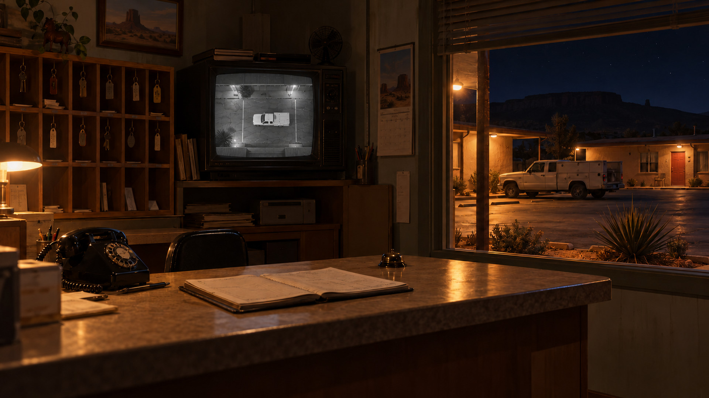
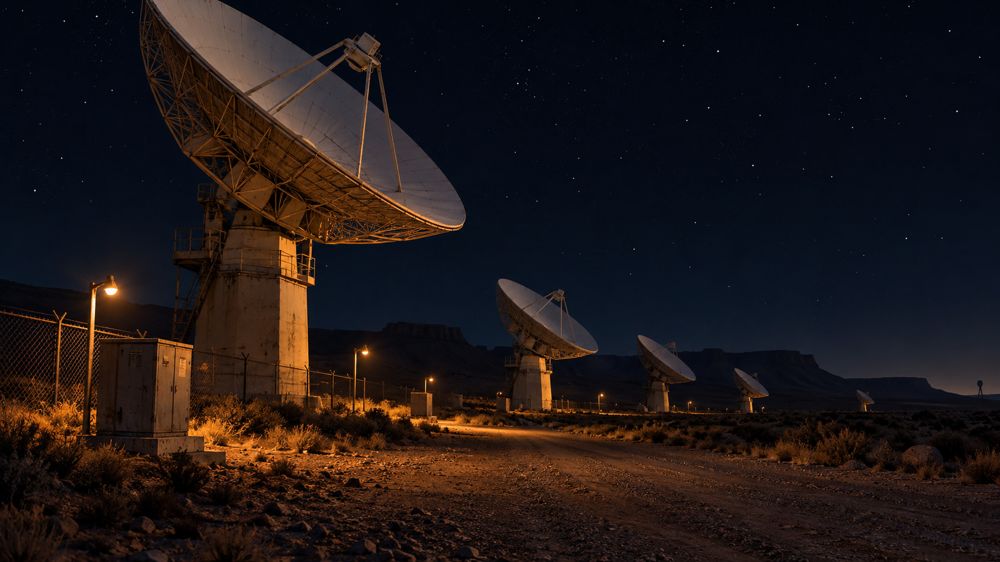
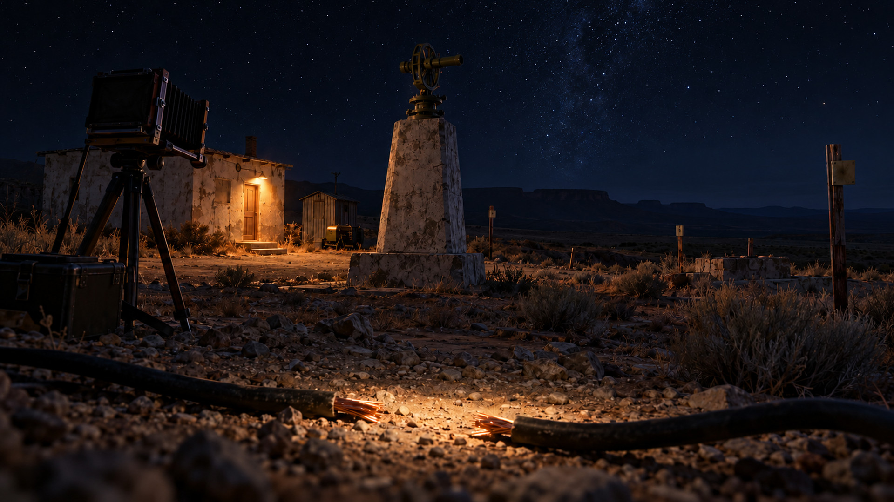
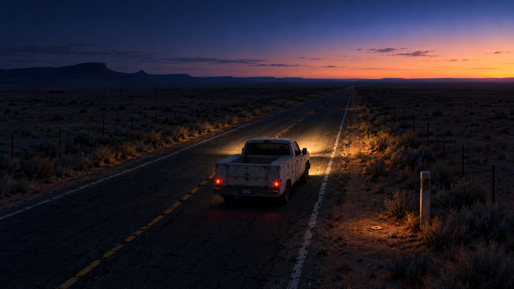

Én natt.Åtte øyeblikk.
En varm nattluke, noen som lytter, og en bil som blir stående. Nye bilder av stedene og det rare som skjer mellom dem.
Basert på historien i repoet. Dette er visuell retning for lys, materialer og fortelling. Bildene er konseptkunst; mål og geometri hentes fra spillet.


01 / KONSEPT
Caliche, litt over tre
Hovedgata sett sørover fra den nordlige enden. Bensinstasjonen og Plaza ligger på vestsiden, AM-stasjonen og kirken på østsiden.
Kilde i repoet
web/HENDELSER.md, del 9
web/src/world/Town.ts, plasseringene langs gata
Miljøretning for bygd gate; ingen ny kartgeometri.


02 / KONSEPT
Telefonen ved nattluka
Telefonautomaten og betjenten samler det trygge og det rare på samme sted. Femcenten er liten, uten forklarende tekst i bildet.
Kilde i repoet
web/HENDELSER.md, hendelse 1 og 5
web/src/story/caliche.ts
Konsept for hendelsene ved bensinstasjonen.


03 / KONSEPT
Night Line, den døde linja
Earl i glassburet under samtalen med gutten som sier det er juli. Den tomme gata speiler seg i vinduet.
Kilde i repoet
web/HENDELSER.md, hendelse 9 og del 9
web/src/core/radio.ts, BOY_CALL
Stemningskonsept ved AM-stasjonen; ingen ny innendørs spillflate.


04 / KONSEPT
Kvinnen utenfor vaskeriet
Et vanlig stoppested med én som lytter mellom stasjonene. Mannens tapte 47 minutter ligger i historien, uten å illustreres som et spøkelse.
Kilde i repoet
web/HENDELSER.md, del 9, kvinnen på benken
web/src/story/caliche.ts, kvinnen
Miljø- og personkonsept ved eksisterende benk.


05 / KONSEPT
Bildet på motell-TV-en
TV-en viser plassen rett ovenfra, mens samme pickup står utenfor vinduet. Hendelsen er spesifisert; bildet er et konsept for videre innbygging.
Kilde i repoet
web/HENDELSER.md, hendelse 10
web/src/world/MotelFront.ts
web/ART_BRIEF.md, runde 15, motell-TV
Konsept for spesifisert motellhendelse, ikke bevis på ferdig implementering.


06 / KONSEPT
Mellom antennene
Det store er kjent utstyr, det lille står i ytterkanten av bildet. Bare noen av anleggets 27 antenner vises.
Kilde i repoet
web/HENDELSER.md, del 7
web/memory.md, 27 antenner og az 026
web/src/core/glimpses.ts
Lys- og komposisjonskonsept for glimtene i antennefeltet.


07 / KONSEPT
Kabelen på STATION 01
Et nærmere blikk på det avkuttede kabelparet, med transitten som fast holdepunkt. Bildet bygger videre på det eksisterende stasjonskonseptet.
Kilde i repoet
web/HISTORIE.md, The Survey Station og forfatterfasit
web/src/world/Station01.ts
Konsept for eksisterende sted og kabelbevis; ingen ny oppmåling.


08 / KONSEPT
Roswell-veien, 05:29:47
Pickupen blir liten på veien idet kameraet trekker seg ut. Gryet ligger foran og til høyre; ingen oppvåkning legges til slutten.
Kilde i repoet
web/HISTORIE.md, THE EVENT og uttrekket
web/KAPITLER.md, Roswell Road, kurs og uttrekk
Fortellingskonsept for den vedtatte slutten; røper slutten.